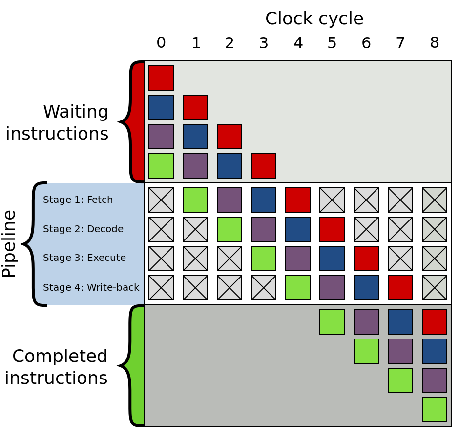
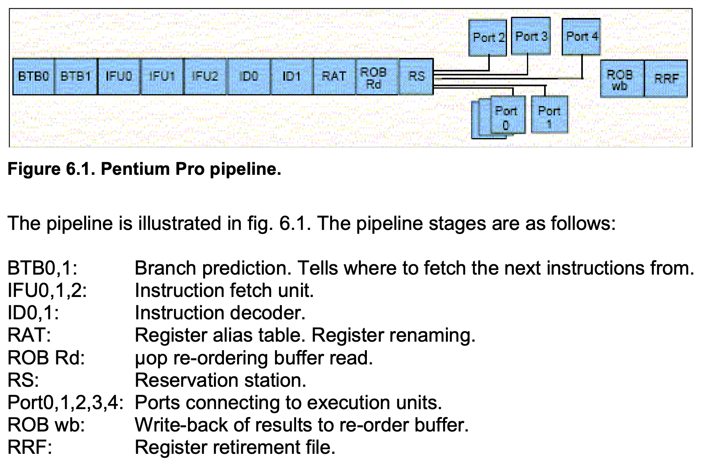

Как работает CPU
Class RISC pipeline

Real life
Out-of-order execution
µops
// ISA instructions → µops (names made up)
add %eax, x → µload x, %tmp1
µadd %eax, %tmp1
µstore %tmp1, x
mov mem1, %eax
imul $5, %eax
add mem2, %eax // fetch started before imul
mov %eax, mem3
Register renaming
Every time an instruction writes to or modifies a logical register, the microprocessor assigns a new temporary register to that logical register.
movl mem1, %eax
imull $6, %eax
movl %eax, mem2
movl mem3, %eax // old value of eax dropped
addl $2, %eax
movl %eax, mem4 // eax retirement
Branch prediction (предсказание переходов)
Predict whether branch is T (taken) or NT (not taken).
Loop vs conditional
Stupid approach:
loop:
...
jz loop // T
...
jz else // NT
...
else:
Predict taken backwards, not taken forwards.
Saturating counter
Store state for every branch: T ↔ Weak T ↔ Weak NT ↔ NT
Return prediction
A Last-In-First-Out buffer, called the return stack buffer, remembers the return address every time a call instruction is executed, and it uses this for predicting where the corresponding return will go. This mechanism makes sure that return instructions are correctly predicted when the same subroutine is called from several different locations.
See PDF for better methods.
Pipeline (конвейер)
General idea: different stages of execution require different hardware, so we can parallelize them.

Keywords:
- µop cache
- execution unit
- micro-op fusion (e.g. memory write: address calculation + data transfer)
- macro-op fusion (e.g. cmp + jz)
- stack engine (special handling of esp/rsp)
µop stages:
- queued in ROB (reorder buffer)
- executing
- retirement (register writeback etc.)